Projeto de uma fonte chaveada flyback 12 V / 3 A com entrada universal e controle por UC3845 — Revisão B
Disciplina: ELP22109 – Eletrônica de Potência II
(2026-2) · Projeto Semestral – Tema II
Aluno: Mateus Salgado Barboza Costa ·
Professor: Joabel Moia · Instituição:
IFSC – Campus Florianópolis, Engenharia Eletrônica Revisão B –
novembro de 2026 (revisão A de 19/10/2026 preservada em
PROJETO/; parecer técnico V1 de 04/11/2026 em
REVISAO_TECNICA_V1.pdf)
Origem de cada resultado. Neste relatório cada número é marcado por [C] cálculo (
02_Calculos), [S] simulação LTspice da revisão B (03_Simulacao/runs/medidas.jsone releitura dos.raw), [CAD] verificação de CAD (ERC/DRC do KiCad,04_KiCad/drc_B.json) ou [M] medição física. Não há medições físicas nesta revisão: o protótipo não foi montado.
1. Introdução
O objetivo deste trabalho é realizar o projeto completo de um conversor estático segundo o Tema II do projeto semestral: retificador em ponte completa a diodos com filtro capacitivo seguido de uma fonte chaveada flyback, com o circuito integrado dedicado UC3845, proteções contra surtos da rede, filtro de EMI, grampeamento de tensão sobre o transistor (snubber) e malha fechada da tensão de saída. O produto idealizado é uma fonte CA-CC de 36 W (12 V / 3 A) com entrada universal 90–264 VAC, da classe das fontes de mesa de roteadores, câmeras de CFTV, fitas de LED e automação. O enunciado prevê validação em 127 V e 220 V.
A revisão A foi submetida a um parecer técnico independente, que manteve a arquitetura e devolveu o projeto para correção antes de encomendar a placa ou energizar o primário, apontando: esforços em curto-circuito maiores que os publicados (9 A no MOSFET, 596 V no dreno) e ausência de desligamento; o grampo RCD com os resistores em série na placa (36,4 kΩ) em vez de em paralelo (9 kΩ) como no modelo; o filtro do sensor de corrente no lado errado do resistor; o choke de modo comum abaixo da corrente eficaz de entrada; classes de rede não atribuídas no projeto KiCad (regras de 1 mm e 6 mm sem efeito); instruções incompatíveis para o secundário do transformador no guia; e janelas de medição que omitiam os transitórios. Esta revisão B corrige cada item, refaz todas as simulações com janelas antes/durante/depois de cada evento, acrescenta a proteção de curto-circuito por hiccup, torna o DRC verificável (classes atribuídas e ensaio de cobertura das regras) e reorganiza a placa para um protótipo de teste confiável e para um produto com gabinete.
Com a revisão B fechada, optou-se pela Possibilidade
II (protótipo): o pedido de compra, o cronograma até 21/12 e o
registro de medições estão em 08_Montagem; os resultados
experimentais entrarão na revisão C. Este relatório ainda não contém
medições.
2. Fundamentação teórica
2.1 Flyback em condução descontínua com controle por corrente de pico
Durante a condução do MOSFET (D·T) o primário recebe a tensão de bulk Vb e a corrente cresce até Ip = Vb·D·T/Lp, armazenando W = ½·Lp·Ip²; com o transistor bloqueado a energia é entregue ao secundário pelo diodo com Is,pk = n·Ip, que decresce com (Vo+Vf)/Ls durante D2·T. O projeto em MCD na pior condição (Vb,mín, plena carga) segue a Aula 04C (Barbi): Ip = 2·Po/(η·Vb,mín·Dmáx), Lp = Vb,mín·Dmáx/(Ip·fs), Vr = Dmáx/(1−Dmáx)·Vb,mín e n = Vr/(Vo+Vf). No controle por corrente de pico o comparador do UC3845 encerra cada ciclo quando a tensão no resistor de sensoriamento atinge o limiar (COMP−1,4)/3 ≤ 1 V: a planta fica de primeira ordem e o limite de corrente é inerente — mas só enquanto o núcleo é reiniciado a cada ciclo. Com a saída em curto a tensão refletida cai a poucos volts, a corrente magnetizante não se extingue no bloqueio e cresce a cada ciclo pelo tempo mínimo de condução do CI (atraso do comparador, do driver e do filtro RC) até que as quedas resistivas do secundário forneçam o reset: é esse o mecanismo do transitório observado no curto e a razão de a proteção precisar de um segundo nível (desligamento por UVLO).
2.2 Estágio de entrada, proteções e qualidade de energia
A ponte com filtro capacitivo conduz perto do pico da rede (Aula 06): corrente pulsada, fator de potência 0,4–0,6 e THD elevada, aceitáveis para 36 W (abaixo dos 75 W da IEC 61000-3-2 classe D). O capacitor de bulk define a tensão mínima no vale (critério de 90 V do guia com margem para tolerância de −20 % e ESR) e as correntes eficazes nos diodos e no próprio capacitor. Proteções (Aula 07): fusível de ação lenta com tensão nominal igual ou superior à máxima da rede (500 V), NTC para o inrush, varistor 275 VAC, grampo RCD. Filtro de EMI (Aula 08): X2 (modo diferencial), choke de modo comum dimensionado para a corrente eficaz de entrada e Y1 entre os terras.
2.3 Transformador em alta frequência (Aula 04C)
AeAw = 1,1·Po·10⁴/(kw·kp·J·fs·Bmáx); lg = 2·µ0·W/(B²·Ae); Np = B·lg/(µ0·Ip); bitola limitada por Δ = 7,5/√fs; J = 450 A/cm²; Kocup ≤ 0,7; perdas no núcleo (IP12R) e no cobre; ΔT = P·Rt, Rt = 23·(AeAw)−0,37. O núcleo com entreferro satura em Isat ≈ Ip·Bsat/Bmáx (≈ 3 A para Bsat = 0,35 T), o que limita, na prática, o transitório de curto (o modelo de simulação usa indutores lineares e portanto não representa a saturação).
2.4 Perdas e dissipadores (Aula 02)
Condução RDS(on)(Tj)·Irms²; comutação ½·V·I·tf,ef·fs (ligação com corrente nula em MCD, só a descarga de Coss); diodo Schottky V0·Iméd + Rd·Irms². RθSA = (Tj−Ta)/P − RθJC − RθCS, com Tj = 125 °C e Ta = 40 °C (Tarefas 1 e 2). Em um encapsulamento isolado (TO-220FP) a aleta fica sem tensão, ao custo de RθJC maior.
2.5 Comando com o UC3845 (Aula 05)
Oscilador fosc ≈ 1,72/(RT·CT), flip-flop (fsw = fosc/2, D ≤ 50 %), comparador de corrente (1 V), UVLO 8,4/7,6 V, saída totem-pole de 1 A, partida por resistor do bulk e alimentação pelo auxiliar. Hiccup: se o auxiliar não sustenta o VCC (saída em curto), CVCC descarrega com ICC − Istart até o UVLO, o CI desliga, Rstart recarrega até 8,4 V e o CI tenta de novo; o ciclo de trabalho da falha é trun/(trun+trecarga) e independe de CVCC. Para isso o resistor série do auxiliar precisa filtrar os picos de dispersão que, com 10 Ω, mantinham o VCC em 13 V no curto. Malha: TL431 + PC817, compensador tipo 2; o modelo de pequenos sinais inclui o banco de capacitores com ESR, o pós-filtro L2–C13 e o polo do optoacoplador (parecer, item 08).
2.6 Layout (Aula 08 e IPC-2221)
Fluxo linear, agrupamento por função, laços curtos, trilhas a 45°, terras de sinal e de potência unidos num único ponto, 100 nF junto ao VCC, larguras e isolamentos por corrente e tensão (IPC-2221), isolação primário–secundário ≥ 6,4 mm (IEC 62368-1) com fendas, planos de terra, pontos de teste e DFM. Na revisão B as regras passaram a ser verificáveis: classes atribuídas a todas as redes e ensaio de cobertura com violações deliberadas numa cópia.
3. Materiais e métodos
Mesma cadeia automatizada da revisão A (Python/numpy, LTspice em
lote, KiCad 10 por kicad-cli e pcbnew), com as
alterações da B:
- Referência elétrica única (parecer, passo 1):
02_Calculos→04_KiCad/gera_sch.py→netlist.net→05_BOM_Custo/bom.py. Valores da B: C1 150 µF/400 V (18 × 40 mm), fusível axial T2A/500 V (Littelfuse 477), choke Schaffner RN214 2 × 10 mH / 1,2 A (pinos 1-2 e 3-4), R5 ∥ R6 = 9 kΩ (2 × 18 kΩ 2 W em paralelo no esquemático e na placa), filtro do ISENSE R11 = 330 Ω / C3 = 100 pF no pino 3 (τ = 33 ns), R9 ∥ R10 = 2 × 0,68 Ω = 0,34 Ω, compensador Rz = 21,5 kΩ / Cz = 270 nF (fc ≈ 0,8 kHz), TL431 com footprint próprio K-A-REF (1-2-3, TI tabela 5-1), Y1 com passo 10 mm, R13 = 100 Ω no auxiliar (hiccup), Q1 = STF13N65M2 (TO-220FP isolado; mesmo die do STP13N65M2 usado no modelo). - Simulação
(
03_Simulacao/gera_netlist.py,executa_b.py): modelo comportamental do UC3845 (UVLO 8,5/7,9 V no modelo, Istart 0,5 mA), VDMOS do STP13N65M2, TL431/PC817 comportamentais, Llk = 2 %, ESR explícitas. 23 casos: regime 90/127/220/264 V × 10/50/100 % (6 ciclos de rede, medição nos 2 últimos); partida a frio em 90 e 264 V (pré-carga de C1 e C5 descarregados com Istart máximo até o UVLO, transferindo tensão de barramento e fase da rede do cruzamento para o início do chaveamento); degraus 50 → 100 % (80 ms) e 100 → 50 % (100 ms) em 90 e 264 V e com CTR = 0,5; curto de 60 a 380 ms em 220 V com medições separadas na aplicação (2 ms), no curto sustentado e na recuperação; tolerância do barramento (C1 = 120 µF, −20 %); sem grampo; Llk = 3 %. Os.raw(0,3–1,3 GB) são relidos poranalisa_curto.pyeanalisa_transitorios.pypara as janelas; as tabelas do relatório vêm de06_Relatorio/gera_tabelas.py. - Esquemático e placa:
gera_sch.py(ERC),placement.py(sem sobreposições),router.py+completa_rotas.py(busca em grade para os ramos /DRV e /CS),gera_pcb.py, DRC com paridade e preenchimento de zonas,testa_regras.py(cobertura do DRC), exportação de Gerbers/furação/3D da mesma revisão. - BOM e custo (
bom.py→BOM.xlsx,custo.xlsx), guia de montagem B (08_Montagem, pinagem do T1 fixada, instrumentação com isolador e sonda diferencial, curto bloqueado até os limites) e Tarefa Extra (modelo).
Hipóteses: η = 0,82; Dmáx = 0,43; Bmáx = 0,25 T; J = 450 A/cm²; kw = 0,4; kp = 0,3; grampo em 1,8·Vr; Llk = 2 % (verificação a 3 %); Ta = 40 °C; Tj = 125 °C; para manter o transformador da A, o vale de projeto de T1 ficou em 94,6 V (conservador) embora com 150 µF o vale calculado em 90 V/50 Hz seja 104,1 V [C].
4. Resultados
4.1 Requisitos e estágio de entrada [C]
| Grandeza | Valor |
|---|---|
| Entrada | 90–264 VAC, 50/60 Hz (nominais 127 e 220 V) |
| Saída | 12,0 V ± 5 %, 0,3–3,0 A (36 W), ondulação ≤ 120 mV p-p |
| Comutação | 65 kHz (UC3845, D ≤ 0,5) |
| Rendimento | meta 85 % em 220 V (critério fixado); hipótese de cálculo 82 % |
| Proteções | fusível T2A/500 V, NTC 10 Ω, MOV S14K275, limite ciclo a ciclo, hiccup por UVLO no curto, grampo RCD |
| EMI | X2 220 nF + choke MC 2 × 10 mH (1,2 A) + X2 100 nF, Y1 2,2 nF |
| Isolação | transformador + opto; ≥ 6,4 mm na PCI (verificado pelo DRC) |
Com C1 = 150 µF / 400 V: Vbulk,mín = 104,1 V em 90 V/50 Hz (82 µF daria 88 V, abaixo do critério de 90 V do guia; 120 µF, −20 % de tolerância, dá ≈ 100 V — caso simulado em 4.6), corrente eficaz no capacitor 0,80 A, corrente eficaz de entrada 0,89 A em 90 V → choke de 1,2 A (o Würth 744821110 da A era de 0,7 A / 250 VCA), fusível T2A/500 V (2,5 × Irms; interrupção 1500 A conforme catálogo Littelfuse 477), ponte GBU4J (0,19 A médios por diodo, VRRM 600 V), inrush 31 A com NTC (187 A sem).
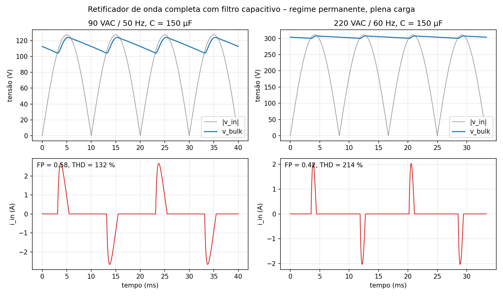
4.2 Flyback e transformador [C]
Projeto preliminar com Vb,mín = 94,6 V (conservador) e Dmáx = 0,43: Vr = 71,3 V, n = 5,62, Ip = 2,16 A, Lp = 290 µH. Núcleo Thornton E-30/7 (NEE-30/15/7, IP12R): lg = 0,45 mm, Np = 42, Ns = 7, Naux = 9, Lp = 294 µH, Bpico = 0,25 T, fios 1 × 23 AWG (primário), 5 × 23 AWG (secundário), 1 × 28 AWG (auxiliar), perdas 0,96 W, ΔT = 29 °C, Kocup = 0,46 (tabela 1). Com o vale real de 104 V (150 µF) a razão cíclica em 90 V/plena carga cai a 0,39 e o modo continua MCD. A ficha de fabricação (pinagem 1-BULK, 3-DRAIN, 4-PGND, 5-AUX, 6/7-SGND, 9/10-ânodos de D1, 2 e 8 livres; ordem de camadas; ensaios de Lp, Llk, relação e fase) está no guia de montagem §3.
Tabela 1 – Núcleos candidatos [C].
| Núcleo | AeAw (cm⁴) | lg (mm) | Np/Ns/Naux | Lp (µH) | P núcleo (W) | P cobre (W) | ΔT (°C) | Kocup |
|---|---|---|---|---|---|---|---|---|
| E-30/7 | 0,48 | 0,45 | 42/7/9 | 294 | 0,62 | 0,35 | 29,1 | 0,46 |
| E-30/14 | 1,02 | 0,23 | 21/3/4 | 294 | 1,23 | 0,19 | 32,4 | 0,22 |
| E-42/15 | 2,84 | 0,15 | 14/2/3 | 297 | 2,63 | 0,16 | 43,7 | 0,08 |
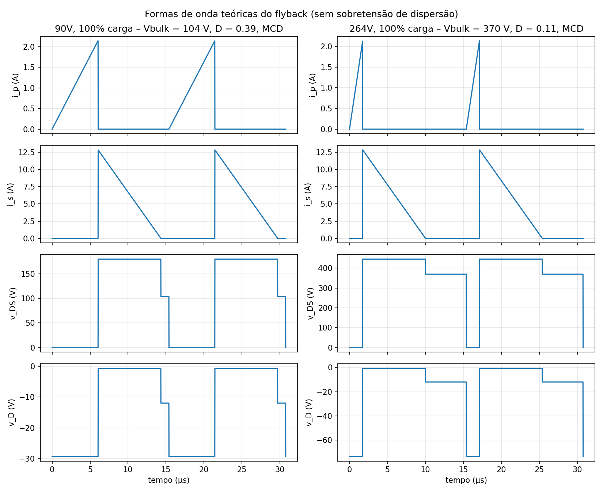
Esforços teóricos (tabela 2): Ip = 2,14 A em toda a faixa (MCD), Vds máx = 507 V em 264 V com grampo a 1,8·Vr, Vrev do diodo 74 V, Is,rms = 5,45 A, Ic,rms = 4,54 A.
Tabela 2 – Esforços teóricos por ponto de operação [C].
| Vac | carga | D | Ip (A) | Ip,rms (A) | Is,pk (A) | Is,rms (A) | Ic,rms (A) | Vds grampo (V) | Vd,rev (V) |
|---|---|---|---|---|---|---|---|---|---|
| 90 | 100 % | 0,393 | 2,14 | 0,776 | 12,9 | 5,45 | 4,54 | 261 | 33 |
| 127 | 100 % | 0,258 | 2,14 | 0,629 | 12,9 | 5,45 | 4,54 | 314 | 41 |
| 220 | 100 % | 0,138 | 2,14 | 0,460 | 12,9 | 5,45 | 4,54 | 445 | 63 |
| 264 | 100 % | 0,114 | 2,14 | 0,418 | 12,9 | 5,45 | 4,54 | 507 | 74 |
| 264 | 10 % | 0,036 | 0,68 | 0,074 | 4,1 | 0,97 | 0,92 | 507 | 74 |
4.3 Capacitores, filtro de saída e snubber [C]
Saída: 3 × Rubycon ZLH 1000 µF/25 V (RSE 6,3 mΩ, Iripple 6,0 A ≥ 4,54 A, ΔV1 = 89 mV) + pós-filtro 3,3 µH (Bourns RLB0914, Isat 11 A) / 470 µF → ondulação teórica 2,7 mV (fig. 3). Bulk 150 µF/400 V 105 °C (Nichicon UCY2G151MHD); VCC 220 µF/35 V + 100 nF; VREF 1 µF; CT 2,2 nF C0G; X2 220 nF e 100 nF; Y1 2,2 nF (passo 10 mm); snubber 22 nF/630 V de filme. Snubber RCD: R = 9 kΩ (2 × 18 kΩ / 2 W em paralelo, 2,0 W no conjunto com Llk 2 %; 2,6 W a 3 %), C = 22 nF/630 V, UF4007; Vds = 507/524 V (fig. 4). RC do diodo de saída 15 Ω + 2,2 nF/100 V (valor comercial instalado e simulado).
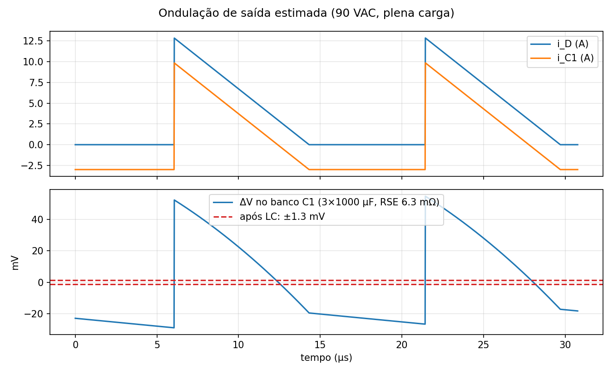
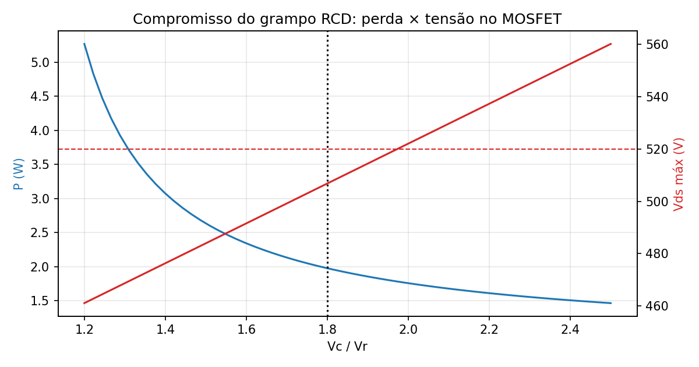
4.4 Diodos, transistor, perdas e dissipadores [C]
Pré-escolha: MOSFET 650 V (Vds ≤ 80 %), diodo Schottky 100 V/≥ 10 A, ponte 600 V/4 A. Entre os MOSFETs candidatos (tabela 3) as perdas são equivalentes (1,15 W no pior caso) e a revisão B escolhe o STF13N65M2 em TO-220FP (isolado): RθJC 3,5 °C/W, Tj ≈ 72 °C com o clip de 24 °C/W, sem mica e com a aleta sem potencial — no TO-220 metálico da A a aleta ficava no potencial do dreno (≈ 500 V). Sem dissipador Tj seria 112 °C: o dissipador é necessário. Diodo STPS20H100CT (2 × 10 A em paralelo): 1,78 W, clip → Tj ≈ 84 °C (sem dissipador ≈ 150 °C: necessário). Ponte GBU4J: 0,67 W, Tj ≈ 53 °C sem dissipador. Resistores quentes: R5/R6 (1,0 W cada), R3/R4 (0,42 W cada a 264 V), NTC — afastados dos eletrolíticos na placa.
Tabela 3 – MOSFETs candidatos [C].
| MOSFET | RDS(on) (mΩ) | Ptot 90 V (W) | Ptot 264 V (W) | RθJC (°C/W) | isolado | Tj com clip (°C) |
|---|---|---|---|---|---|---|
| IPA65R400CE (TO-220FP) | 400 | 1,14 | 1,38 | 4,0 | sim | 79 |
| STP13N65M2 (TO-220) | 430 | 1,04 | 1,15 | 1,14 | não | 69 |
| STF13N65M2 (TO-220FP) | 430 | 1,04 | 1,15 | 3,5 | sim | 72 |
| FCPF190N65S3 (TO-220F) | 190 | 0,83 | 1,40 | 3,5 | sim | 79 |

Tabela 4 – Orçamento de perdas em plena carga [C] (W).
| Vac | MOSFET | diodo | ponte | trafo | snubber | Rsense | partida | cap. saída | NTC | LLC | UC3845 | total | η (%) |
|---|---|---|---|---|---|---|---|---|---|---|---|---|---|
| 90 | 0,98 | 1,78 | 0,67 | 0,95 | 2,02 | 0,20 | 0,09 | 0,13 | 0,79 | 0,09 | 0,22 | 7,94 | 81,9 |
| 127 | 0,98 | 1,78 | 0,45 | 0,90 | 2,02 | 0,13 | 0,19 | 0,13 | 0,48 | 0,09 | 0,22 | 7,39 | 83,0 |
| 220 | 1,15 | 1,78 | 0,24 | 0,87 | 2,02 | 0,07 | 0,58 | 0,13 | 0,23 | 0,09 | 0,22 | 7,39 | 83,0 |
| 264 | 1,15 | 1,78 | 0,20 | 0,86 | 2,02 | 0,06 | 0,83 | 0,13 | 0,18 | 0,09 | 0,22 | 7,53 | 82,7 |
4.5 Componentes do CI, driver, proteção de curto e malha de realimentação [C]
RT = 6,04 kΩ, CT = 2,2 nF → fsw = 64,7 kHz. Rs = 0,34 Ω (2 × 0,68 Ω / 1 W): limite 2,65–2,94 A; filtro 330 Ω / 100 pF no pino 3 (τ = 33 ns, atraso mínimo para reduzir o excesso de corrente na aplicação do curto). Partida 2 × 82 kΩ / 1 W (Istart ≥ 0,5 mA no vale de 90 V): tempo até o UVLO de 1,0–4,3 s com ICC,start típico de 0,3 mA [C] e de 1,1 s (264 V) a 7,4 s (90 V) com o máximo de 0,5 mA [S, pré-carga] — partida lenta em rede baixa, aceitável para fonte de mesa, mas um produto pediria 2 × 68 kΩ ou partida ativa; CVCC 220 µF (sustenta 9,2 ms entre 8,4 e 7,6 V; o auxiliar assume em < 6 ms [S]). Auxiliar 15,4 V com UF4004 + R13 = 100 Ω. Proteção de curto (hiccup): com a saída em curto o auxiliar cai a ≈ 0,9 V, o VCC descarrega com ICC − Istart até 7,6 V, o CI desliga e religa após a recarga por Rstart (tabela 5): em 220 V o ciclo de trabalho da falha calculado é ≈ 10 % [C]; a simulação [S] dá 155 ms até o UVLO, 97 ms de recarga e 15 ms ligado por tentativa (ciclo de trabalho 13 %), o que reduz a corrente eficaz média de D1 no curto a ≈ √0,13 ≈ 0,37 do valor sustentado. Driver: saída totem-pole do UC3845 (Rg 10 Ω + 1N4148 + 10 kΩ). Compensação de rampa: desnecessária (MCD, D < 0,5).
Tabela 5 – Hiccup calculado [C] (CVCC = 220 µF, ICC = 13 mA).
| Vac | t até UVLO (ms) | t recarga (ms) | t ligado por tentativa (ms) | ciclo de trabalho da falha (%) |
|---|---|---|---|---|
| 90 | 138 | 854 | 14,1 | 1,6 |
| 127 | 141 | 335 | 14,5 | 4,1 |
| 220 | 151 | 133 | 15,5 | 10,4 |
| 264 | 157 | 103 | 16,0 | 13,4 |
Malha: divisor Ra = 9,53 kΩ / Rb = 2,49 kΩ (12,04 V), RLED = 2,74 kΩ, Rbias = 1 kΩ, pull-up 4,7 kΩ, Cp = 1 nF. O modelo da planta da B inclui o banco de capacitores com RSE, o pós-filtro L2–C13 (ressonância ≈ 4 kHz) e um polo do opto em 10 kHz; o compensador tipo 2 com Rz = 21,5 kΩ, Cz = 270 nF cruza em 0,79 kHz com margem de fase 88° e margem de ganho 13 dB em plena carga, mantendo-se ≥ 86° para 10 % de carga e CTR de 0,5 a 1,6 (fig. 6). A margem é um resultado do modelo [C]; os degraus simulados [S] confirmam a ausência de oscilação, mas não medem a margem.
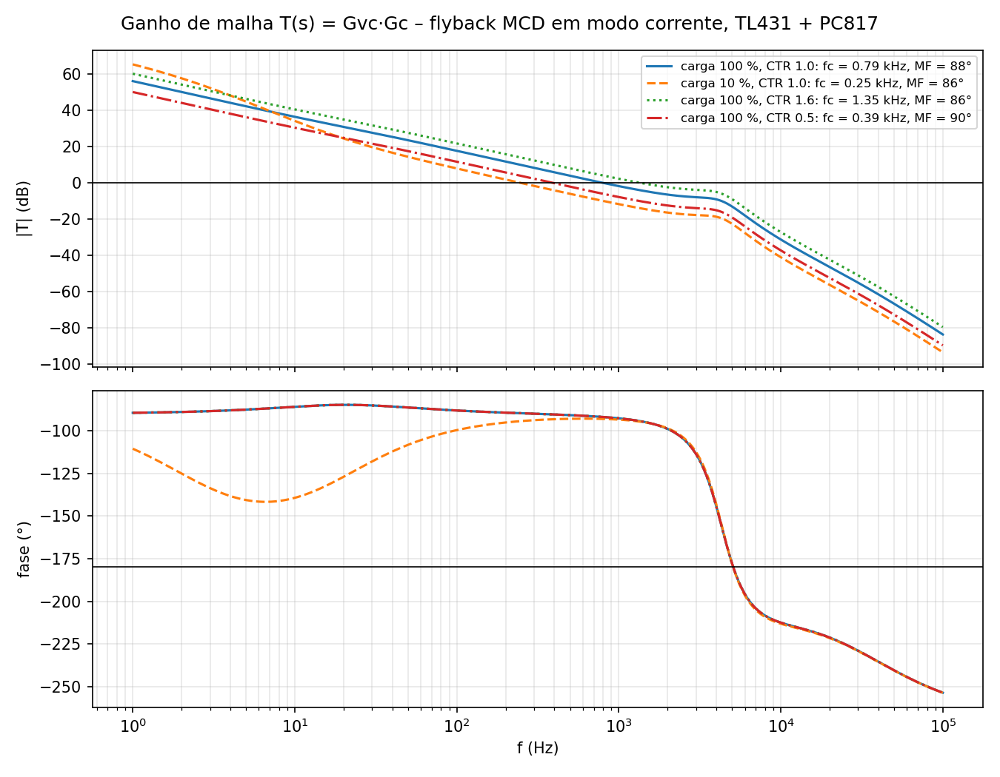
Filtro de EMI: choke 2 × 10 mH (Schaffner RN214-1.2-02-10M, 1,2 A a 40 °C, Rdc 195 mΩ), X2 220 nF + 100 nF, Y1 2,2 nF, 2 × 470 kΩ: fDM ≈ 43 kHz, fCM ≈ 24 kHz (fig. 7); curva ideal — a medição com LISN fica para o protótipo.
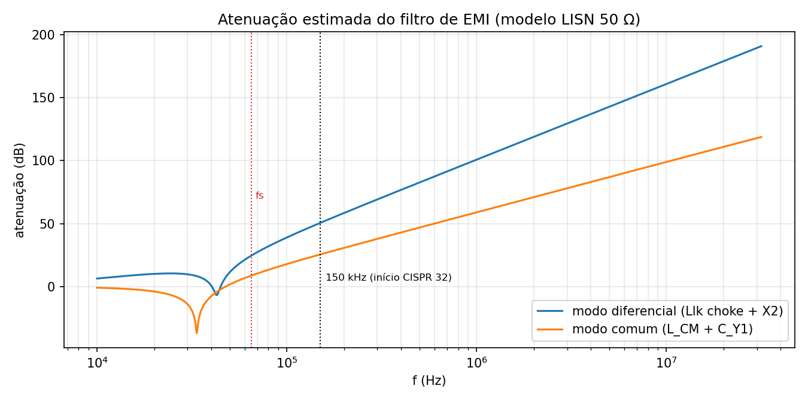
4.6 Simulação da revisão B e comparação com a teoria [S]
Regime permanente (tabela 6). Medições nos dois últimos ciclos de rede de seis simulados; a ondulação é dada separadamente como ondulação de chaveamento (20 períodos) e excursão total em ciclos inteiros da rede (parecer, item “partida e ondulação”).
Tabela 6 – Teoria [C] × simulação [S] em regime permanente.
| Vac | carga | Vo S (V) | ΔVo chav. S (mV) | ΔVo total S (mV) | Ip C (A) | Ip S (A) | Δ | Is,pk C (A) | Is,pk S (A) | Δ | Is,rms C (A) | Is,rms S (A) | Δ | Vds C (V) | Vds S (V) | Δ | η S (%) |
|---|---|---|---|---|---|---|---|---|---|---|---|---|---|---|---|---|---|
| 90 | 10 % | 12,06 | 0,4 | 2,5 | 0,68 | 0,71 | +4,3 % | 4,1 | 3,5 | -12,8 % | 0,97 | 0,83 | -14,7 % | 261 | 206 | -21,1 % | 73,1 |
| 90 | 50 % | 12,06 | 1,6 | 3,5 | 1,52 | 1,47 | -2,9 % | 9,1 | 9,5 | +4,6 % | 3,24 | 2,89 | -10,7 % | 261 | 226 | -13,3 % | 83,2 |
| 90 | 100 % | 12,06 | 2,9 | 5,2 | 2,14 | 2,06 | -3,7 % | 12,9 | 14,2 | +10,1 % | 5,45 | 4,89 | -10,2 % | 261 | 247 | -5,4 % | 82,8 |
| 127 | 10 % | 12,06 | 0,6 | 2,2 | 0,68 | 0,70 | +3,8 % | 4,1 | 3,4 | -16,3 % | 0,97 | 0,82 | -15,2 % | 313 | 257 | -17,9 % | 71,4 |
| 127 | 50 % | 12,06 | 2,1 | 5,0 | 1,52 | 1,48 | -2,7 % | 9,1 | 9,4 | +3,7 % | 3,24 | 2,89 | -10,7 % | 313 | 276 | -11,9 % | 84,1 |
| 127 | 100 % | 12,06 | 3,6 | 5,6 | 2,14 | 2,07 | -3,6 % | 12,9 | 14,0 | +9,2 % | 5,45 | 4,89 | -10,2 % | 313 | 296 | -5,4 % | 84,8 |
| 220 | 10 % | 12,06 | 1,2 | 3,3 | 0,68 | 0,71 | +4,2 % | 4,1 | 3,2 | -20,4 % | 0,97 | 0,81 | -15,8 % | 445 | 388 | -12,8 % | 63,5 |
| 220 | 50 % | 12,06 | 3,1 | 5,1 | 1,52 | 1,47 | -3,2 % | 9,1 | 9,2 | +1,1 % | 3,24 | 2,88 | -10,9 % | 445 | 403 | -9,4 % | 82,7 |
| 220 | 100 % | 12,06 | 4,2 | 8,2 | 2,14 | 2,07 | -3,3 % | 12,9 | 13,8 | +7,6 % | 5,45 | 4,89 | -10,3 % | 445 | 422 | -5,1 % | 85,3 |
| 264 | 10 % | 12,06 | 0,9 | 1,9 | 0,68 | 0,70 | +3,5 % | 4,1 | 3,2 | -22,0 % | 0,97 | 0,81 | -16,0 % | 507 | 449 | -11,3 % | 59,0 |
| 264 | 50 % | 12,06 | 2,6 | 4,8 | 1,52 | 1,47 | -2,9 % | 9,1 | 9,1 | +0,4 % | 3,24 | 2,88 | -10,9 % | 507 | 464 | -8,5 % | 81,2 |
| 264 | 100 % | 12,06 | 2,6 | 9,2 | 2,14 | 2,07 | -3,4 % | 12,9 | 13,8 | +6,9 % | 5,45 | 4,89 | -10,3 % | 507 | 482 | -4,9 % | 84,6 |
Tabela 7 – Perdas e rendimento em plena carga [C] × [S].
| Vac | Vbulk mín C (V) | Vbulk mín S (V) | I in,rms C (A) | I in,rms S (A) | P MOSFET C (W) | P MOSFET S (W) | P diodo C (W) | P diodo S (W) | P snubber C (W) | P snubber S (W) | P ponte C (W) | P ponte S (W) | η C (%) | η S (%) |
|---|---|---|---|---|---|---|---|---|---|---|---|---|---|---|
| 90 | 104,1 | 103,9 | 0,89 | 0,81 | 0,98 | 0,38 | 1,78 | 1,72 | 2,02 | 1,54 | 0,67 | 0,63 | 81,9 | 82,8 |
| 127 | 161,9 | 163,1 | 0,70 | 0,63 | 0,98 | 0,43 | 1,78 | 1,72 | 2,02 | 1,47 | 0,45 | 0,42 | 83,0 | 84,8 |
| 220 | 299,1 | 298,8 | 0,48 | 0,43 | 1,15 | 0,72 | 1,78 | 1,72 | 2,02 | 1,32 | 0,24 | 0,24 | 83,0 | 85,3 |
| 264 | 362,7 | 361,9 | 0,43 | 0,39 | 1,15 | 0,92 | 1,78 | 1,72 | 2,02 | 1,28 | 0,20 | 0,20 | 82,7 | 84,6 |
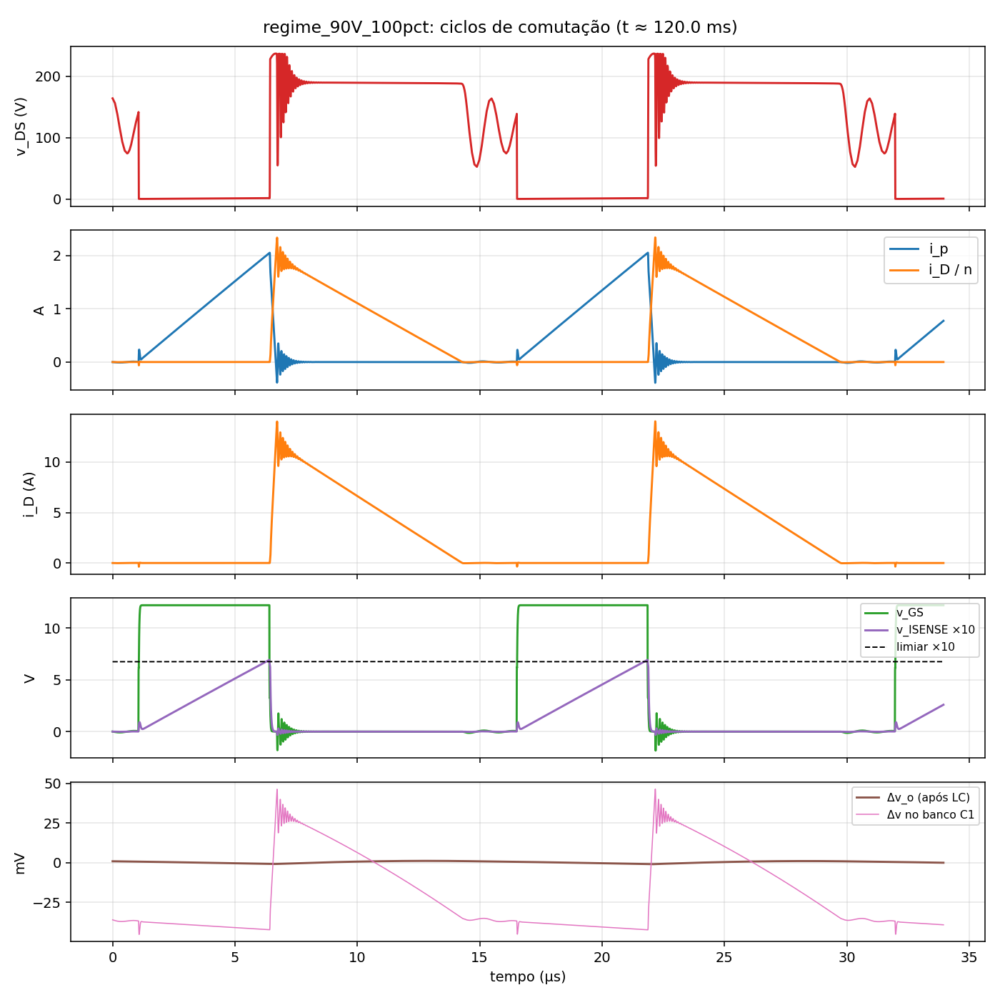
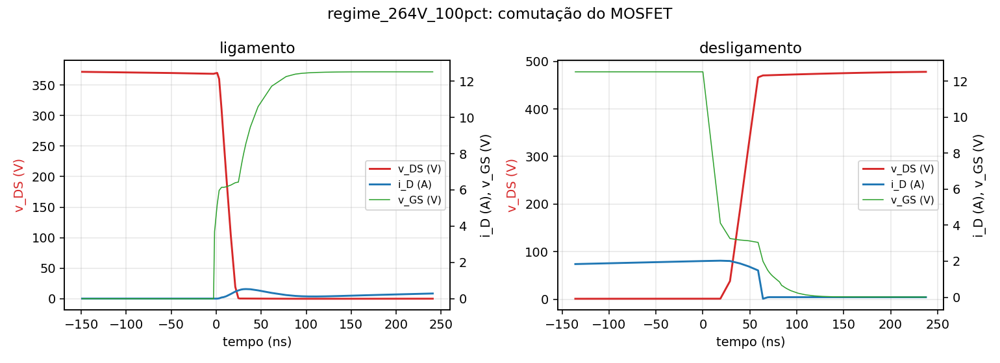
Transitórios (tabela 8). Partida a frio: pré-carga com C1 e C5 descarregados e Istart máximo (0,5 mA) até o UVLO; a tensão de barramento e a fase da rede nesse instante são transferidas ao modelo de chaveamento. Degraus nos dois sentidos após estabilização. Tolerância do barramento com C1 = 120 µF.
Tabela 8 – Transitórios [S].
| Caso (S) | Resultado |
|---|---|
| Partida a frio em 90 VAC, plena carga (C1 e C5 descarregados, fase da rede do cruzamento do UVLO) | pré-carga até 8,5 V em 7,44 s com Vbulk = 126 V; VCC mínimo após o UVLO 8,40 V; Vo ≥ 11,4 V em 5,3 ms; Vo máx 12,06 V; Ip máx 3,10 A; Vds máx 276 V |
| Partida a frio em 264 VAC, plena carga | pré-carga até 8,5 V em 1,07 s com Vbulk = 371 V; VCC mínimo após o UVLO 8,42 V; Vo ≥ 11,4 V em 4,4 ms; Vo máx 12,06 V; Ip máx 3,45 A; Vds máx 517 V |
| Degraus 50 → 100 % (80 ms) e 100 → 50 % (100 ms) em 90 VAC | subida: 12,06 → mín 11,95 V (-114 mV), não sai de ±1 %, volta a ±0,5 % em 4,5 ms; descida: máx 12,16 V (+115 mV), não sai de ±1 %, volta a ±0,5 % em 3,8 ms; Vo na janela 80–120 ms: 11,95–12,16 V; Ip máx 2,06 A |
| Degraus 50 → 100 % e 100 → 50 % em 264 VAC | subida: 12,06 → mín 11,95 V (-116 mV), não sai de ±1 %, volta a ±0,5 % em 4,3 ms; descida: máx 12,16 V (+113 mV), não sai de ±1 %, volta a ±0,5 % em 3,8 ms; Vo na janela 80–120 ms: 11,95–12,16 V; Ip máx 2,06 A |
| Degraus em 90 VAC com CTR = 0,5 (pior opto) | subida: 12,07 → mín 11,87 V (-199 mV), retorno a ±1 % em 4,1 ms (±0,5 % em 8,0 ms); descida: máx 12,24 V (+201 mV), retorno a ±1 % em 3,6 ms (±0,5 % em 8,0 ms); Vo na janela 80–120 ms: 11,87–12,24 V; Ip máx 2,06 A |
| Tolerância do barramento: C1 = 120 µF (−20 %) em 90 VAC/50 Hz, plena carga | Vbulk mín 99,8 V; Vo 12,06 V; Ip máx 2,07 A; η 82,8 % |
| Sem grampo RCD, 264 VAC, plena carga | Vds máx 856 V; Vrev D1 86 V; P snubber 0,00 W; Ip 2,05 A |
| Llk = 3 % de Lp (projeto 2 %), 264 VAC, plena carga | Vds máx 497 V; Vrev D1 89 V; P snubber 1,65 W; Ip 2,07 A |
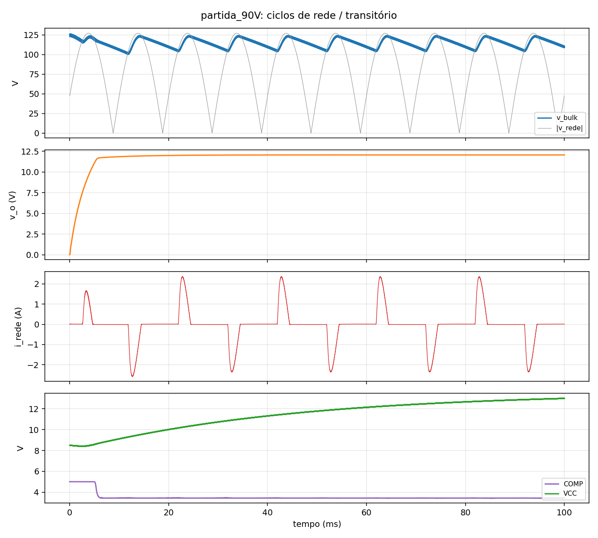
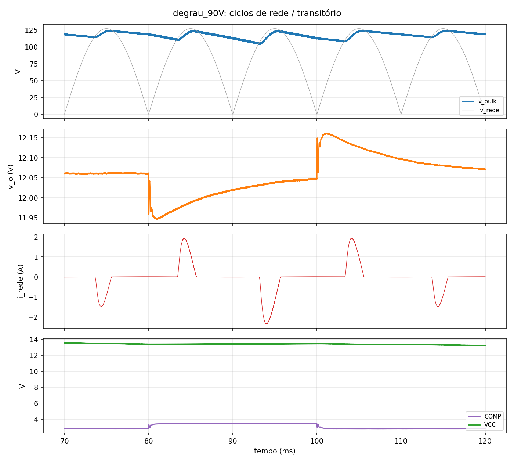
Curto-circuito (tabela 9, figs. 10–11). O curto é aplicado em 60 ms e mantido até 380 ms. Na aplicação, a corrente do primário sobe por alguns ciclos acima do limite — não há reset do núcleo com a saída em zero — até 7,8 A (0,91 T no modelo linear; o núcleo real satura em ≈ 3 A, o que encurta o transitório), I(D1) chega a 55 A e Vds a 555 V (margem de falha fixada em 600 V, 92 % de 650 V, para pulsos). No curto sustentado a limitação ciclo a ciclo segura Ip em 3,3 A e D1 conduz 12,5 A eficazes com 5,7 W; com R13 = 100 Ω o VCC cai e o CI desliga por UVLO (VCC mínimo 7,9 V), religando após a recarga (155 ms até o primeiro desligamento, 97 ms desligado, 15 ms ligado por tentativa) — comportamento que não existia na revisão A (VCC ficava em 13 V e o curto era sustentado indefinidamente). Na recuperação o curto é removido (380 ms) com o CI desligado no hiccup: a saída permanece em zero até o próximo cruzamento do UVLO (VCC = 8,48 V no fim dos 40 ms simulados, religamento ≈ 4 ms depois) e a sequência seguinte é a partida normal da fig. 9, sem sobretensão [S]; o tempo de recuperação é, portanto, até um período de recarga (97 ms em 220 V).
Tabela 9 – Curto-circuito em 220 VAC por janelas [S].
| Janela (S, 220 VAC) | Id(Q1) máx (A) | Ip máx (A) | B equiv. (T) | I(D1) máx (A) | I(D1) rms (A) | Vds máx (V) | VCC mín (V) | Vo máx (V) | PD1 média (W) |
|---|---|---|---|---|---|---|---|---|---|
| aplicação (2 ms) | 7,80 | 7,79 | 0,91 | 55,1 | 20,9 | 555 | 14,16 | 12,06 | 12,81 |
| curto sustentado | 3,34 | 3,34 | 0,39 | 23,6 | 12,5 | 422 | 7,90 | 0,21 | 5,70 |
| recuperação | 0,00 | 0,00 | 0,00 | 0,0 | 0,0 | 310 | 8,23 | 0,00 | 0,00 |
Releitura do .raw (analisa_curto.py,
hiccup_tempos.py): pulsos de comando no curto sustentado =
10859; hiccup: 155 ms até o UVLO, 97 ms desligado, 15 ms ligado por
tentativa (ciclo de trabalho da falha 13 %; cálculo: 15,5 ms / 10,4 %).
Curto removido em 380 ms com o CI desligado: VCC = 8,48 V no fim da
simulação (420 ms), religamento na tentativa seguinte do hiccup, seguido
da partida normal.
![Figura 10 – Curto-circuito em 220 VAC: janela completa (aplicação, sustentado com hiccup, recuperação) [S].](assets/curto_220V_janelas.png)
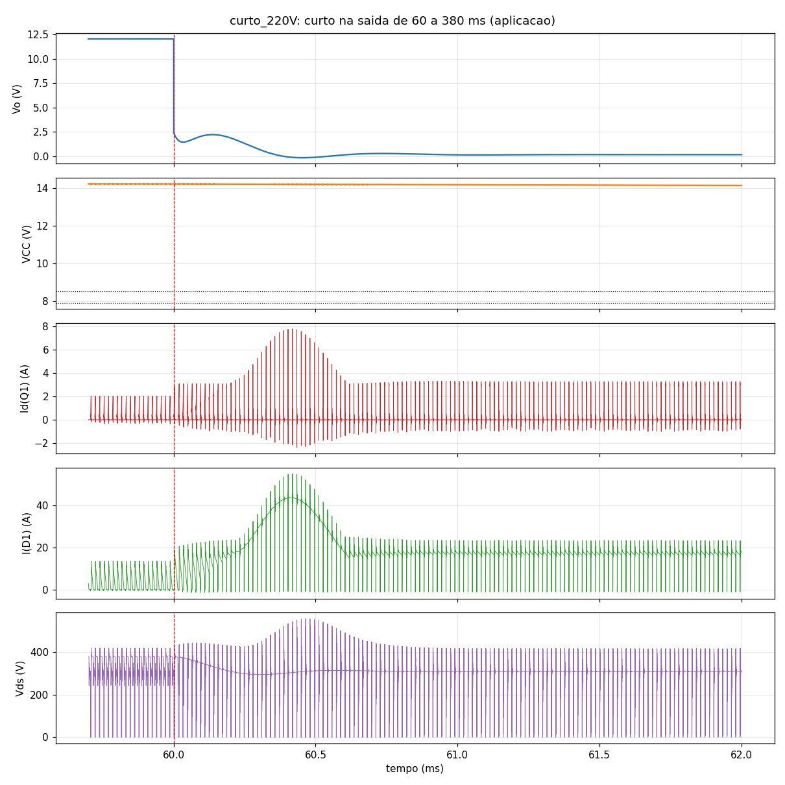
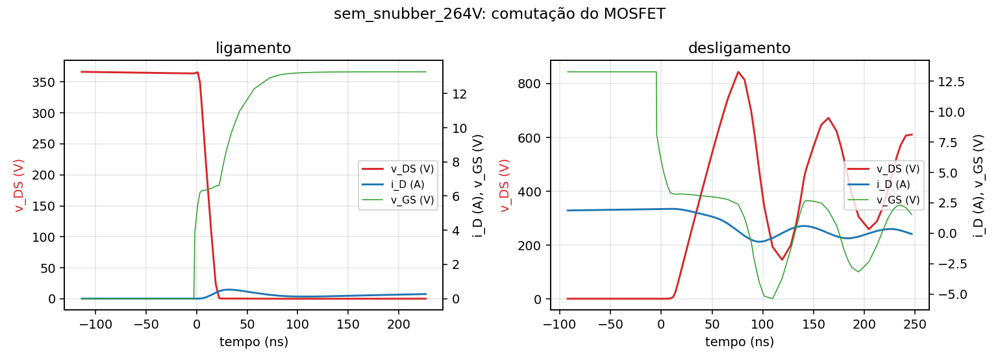
Análise. A tensão de saída fica entre 12,06 e 12,06 V em toda a faixa (regulação de linha e carga < 0,1 %). Em plena carga a corrente de pico do primário difere -3,7 % da teoria (limiar efetivo do comparador e atraso do filtro), Is,pk +10,1 %, Is,rms -10,2 % (a teoria integra o triângulo ideal no vale de Vbulk) e Vds -4,9 % em 264 V (grampo real abaixo de 1,8·Vr). Em carga leve a diferença de Vds (grampo mais baixo com menos energia de dispersão) e de Is,pk excede 10 % a favor da segurança: os casos excedidos estão listados na tabela 10 com as hipóteses do cálculo (triângulo ideal no vale de Vbulk, grampo fixo em 1,8·Vr). O rendimento simulado em 220 V/3 A é 85,3 % (meta 85 %; cálculo 83,0 %), com o grampo (1,32 W) e o diodo (1,72 W) como maiores parcelas.
Tabela 10 – Verificação dos critérios de projeto.
| Critério | Resultado | Situação |
|---|---|---|
| Vo em ±5 % (11,4–12,6 V) para 90–264 VAC e 10–100 % de carga [S] | 12,06 – 12,06 V | atende |
| Ondulação ≤ 120 mV p-p: de chaveamento e excursão total em ciclos da rede [S] | ≤ 4,2 mV / ≤ 9,2 mV | atende |
| Vds máx ≤ 520 V (80 % de 650 V) em regime, 264 VAC [S] | 482 V (Llk 2 %) / 497 V (Llk 3 %); sem grampo 856 V | atende |
| Vds máx em falha (curto) – margem específica: ≤ 600 V (92 % de 650 V, pulso) [S] | 555 V na aplicação, 422 V sustentado | atende |
| Ip ≤ limite do Rsense (2,6–2,9 A) em regime [S] | 2,06 A em 90 VAC | atende |
| Δ teoria × simulação ≤ 10 % nos esforços (critério estrito) [C×S] | 23 de 48 comparações fora de ±10 % — Is,pk: 5 pontos (10/100 % de carga), -22 a +10 %; Is,rms: 12 pontos (10/50/100 % de carga), -16 a -10 %; Vds: 6 pontos (10/50 % de carga), -21 a -11 %. Ip dentro de 10 % em todos os pontos | atende com ressalva (hipóteses do cálculo: triângulo ideal no vale de Vbulk, grampo a 1,8·Vr) |
| Margem de fase ≥ 45° com pós-filtro LC e polo do opto no modelo [C]; degraus sem oscilação [S] | MF = 88° / 86° / 86° / 90° (fc 0,25–1,35 kHz); degraus: desvio ≤ 116 mV, dentro de ±1 %, retorno a ±0,5 % em ≤ 4,5 ms sem oscilação | atende |
| Partida a frio sem sobretensão [S] | Vo máx 12,06 / 12,06 V; VCC mín 8,40 V > 7,6 V | atende |
| Curto sustentado: desligamento por UVLO (hiccup) [C e S] | VCC mín no curto 7,90 V (C: UVLO em 151 ms a 220 V); I(D1) rms sustentado 12,5 A | atende |
| Rendimento em 220 V: meta 85 % / cálculo 83 % [S] | 85,3 % (90 V: 82,8 %) | atende a meta |
4.7 Esquemático [CAD]
Esquemático B (fig. 13;
04_KiCad/fonte_flyback_12V3A_esquematico.pdf): ERC
0 erros, 0 avisos (erc.json); 69 itens na
netlist (54 componentes elétricos, 11 pontos de teste, 4 furos), 33
redes; R5 ∥ R6, C3 no pino 3, TL431 K-A-REF, choke 1-2/3-4, R13 100 Ω,
Q1 STF13N65M2. Netlist, BOM e desenho do transformador descrevem a mesma
ligação (parecer, passo 1).
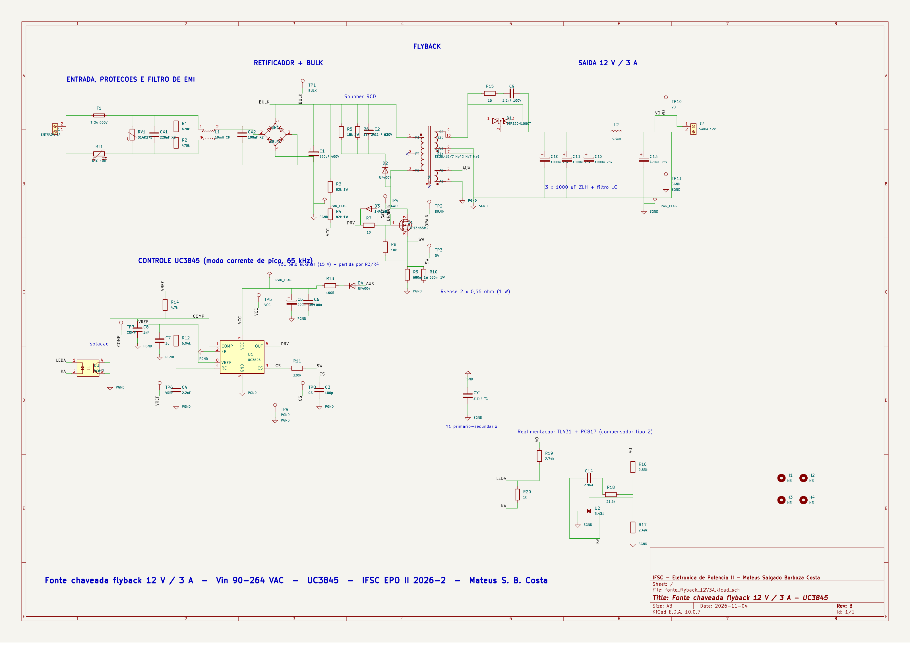
4.8 Lista de materiais e custo
BOM B (05_BOM_Custo/BOM.xlsx, 58 itens): orçamento de
engenharia com preços herdados da A e provisões para os itens trocados
(sem cotação de compra): US$ 42,73 por fonte com a PCI rateada
em 5 placas (≈ R$ 235) e US$ 22,37 em 100
unidades. Para montar um único exemplar comprando o lote mínimo
de 5 placas a saída de caixa é ≈ US$ 81 (42,73 − 9,60 + 48) antes de
fretes, impostos e mínimos (parecer, item 11). Blocos: PCI 22 %, filtro
EMI 14 %, secundário 12 %, transformador 10 %; o kit de mica foi
retirado (Q1 isolado) e C9 fixado em 2,2 nF; em 05/11 o fusível axial
soldado deu lugar a fusível 5 × 20 T2A/250 V em clipes (porta-fusível
para os ensaios; o axial fica para o produto) e entraram os laços de fio
JP1/JP2 para sonda de corrente (Aula 08).
4.9 Layout da PCI [CAD]
Placa B 140 × 90 mm, 2 camadas, todos PTH (fig. 14–16). Mudanças em
relação à A, motivadas pelo parecer e pela orientação de placa de teste
confiável e produto com gabinete: classes de rede atribuídas (HV, SEC,
SEC_PWR; T1.8 como secundário) e regra de isolação incluindo SEC_PWR;
laço SGND do Y1 com 1,5 mm; conector da rede afastado do furo de fixação
(parafuso de gabinete pode ser PE); saída J2 na borda direita; D1
afastado dos eletrolíticos; Q1 isolado com clip sem tensão.
Placement revisto em 05/11/2026, antes do pedido da PCI
(análise região a região em 04_KiCad/ANALISE_PLACEMENT.md):
J1 na borda esquerda abrindo para fora e J2 na direita (cabos em faces
opostas da caixa); filtro de entrada em coluna J1 → F1 → JP1 → RV1/RT1 →
R1/R2 → CX1 → L1 → CX2 → BR1, com CX1 encostado nos pinos de entrada de
L1 (redes da rede de 80 para 54 mm); porta-fusível 5 × 20 de clipes
(troca sem dessoldar nos ensaios); laços de fio JP1 (fase) e JP2
(secundário) para sonda de corrente (Aula 08: “em protótipos, prever
pontos de medida de corrente”); Q1 deslocado para junto de T1 (dreno a
15,7 mm do pino 3, era 24,8) e com o clip a 6 mm do corpo de C1 (era
3,5); eletrolíticos de saída com passo 12 mm; serigrafia de segurança
(valor do fusível junto a F1, L/N em J1, +12 V/0 V em J2, aviso do C1 de
400 V); regra de isolação primário–secundário elevada para 6,4
mm (IEC 62368-1, reforçada, 250 V), com exceção documentada de
6,0 mm só sob a fenda do opto (DIP-4 de 7,62 mm; a fenda interrompe a
linha de fuga, IEC 60664-1), e o roteador passou a limitar o cobre (e
não o eixo) das trilhas. DRC: 0 erros, 0 itens não conectados, 0
divergências com o esquemático; 3 avisos de serigrafia
justificados (opto sobre a fenda; marca “K” do D3). Ensaio de
cobertura: numa cópia com cinco violações deliberadas cada
regra disparou (HV_clearance,
isolacao_prim_sec, largura_HV,
largura_SEC_potencia, borda); sem a exceção do
opto o DRC acusa 8 violações, todas em U3. 255 cantos a 45° (21 ângulos
retos: 19 saídas de pad, 2 a 0,1 mm de um pad); menor distância entre
pads de componentes diferentes 0,95 mm (sinal); pads da rede a ≥ 8,5 mm
dos furos e ≥ 7 mm da borda. Detalhes, avaliação térmica/mecânica para
gabinete e pendências de produto em
04_KiCad/VERIFICACAO_LAYOUT.md; fabricação em
04_KiCad/gerbers/ (Gerbers RS-274X, furação Excellon e
mapa, da mesma revisão B, inspecionados junto com as
fendas no imagens/pcb_camadas.pdf).

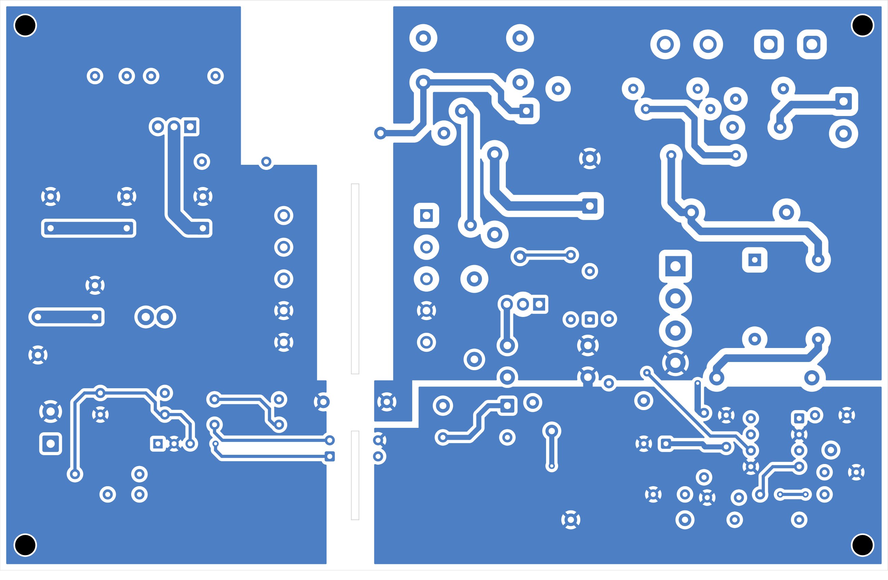

4.10 Montagem e ensaio (Possibilidade II em execução)
08_Montagem/GUIA_MONTAGEM.md (B): ficha de fabricação de
T1 com pinagem única (6/7 SGND, 9/10 ânodos de D1, 4 PGND, 5 auxiliar),
ensaios de Lp, Llk, relação e fase antes de
montar; montagem por blocos; instrumentação com transformador isolador,
terra de proteção do osciloscópio mantido e sonda diferencial; descarga
de C1 (10 J) com 4,7 kΩ/10 W e confirmação com multímetro; tabela de
aceite com origem C/S/M; curto-circuito físico
bloqueado até os limites da seção 5.4 (duração 2 s, parada por
Ip > 3,5 A ou VCC sem cair). Para a execução:
PEDIDO_COMPRA.md (56 itens, ≈ US$ 111 com sobressalentes e
lote de 5 placas), CRONOGRAMA.md (pedido até 10/11, T1 na
semana 2, blocos nas semanas 4–5, ensaios na 6, revisão C na 7) e
REGISTRO_MEDICOES.md com as células [M] em branco. Nenhum
resultado experimental existe nesta revisão.
5. Conclusão
A revisão B responde ao parecer técnico com uma referência elétrica única (esquemático, netlist, BOM e desenho do transformador descrevendo a mesma peça e ligação), simulações refeitas com janelas antes/durante/depois de cada evento e uma proteção de curto-circuito efetiva: o transitório de aplicação do curto permanece (é inerente ao flyback sem reset com saída em zero e fica dentro dos limites pulsados dos semicondutores — 7,8 A e 555 V no modelo, menos no núcleo real por saturação), mas o curto sustentado agora termina em desligamento por UVLO e hiccup graças ao resistor de 100 Ω no auxiliar. Em regime a simulação B dá Vo = 12,06–12,06 V, ondulação ≤ 4,2 mV, Vds = 482 V em 264 V (74 % de 650 V), partida a frio e degraus nos dois sentidos estáveis e rendimento de 85,3 % em 220 V. A placa B tem DRC com classes atribuídas e cobertura comprovada das regras, zero itens não conectados, paridade com o esquemático, dissipadores dimensionados (necessários em Q1 e D1), MOSFET isolado, conectores e distâncias pensados para gabinete, e pacote de fabricação da mesma revisão. Permanecem como trabalho futuro a medição de Llk e da saturação do transformador real, o ensaio de emissões conduzidas e, se houver bancada, o protótipo com o roteiro preparado.
6. Referências bibliográficas
- MOIA, J. Apresentações das Aulas 01 a 08 – Eletrônica de Potência II. IFSC, 2026.
- Parecer sobre a primeira versão – Tema II, fonte flyback isolada de 12 V e 3 A (REVISAO_TECNICA_V1.pdf), 04/11/2026.
- BARBI, I. Projeto de fontes chaveadas. Florianópolis: Edição do Autor, 2003.
- BARBI, I. Eletrônica de potência. 5. ed. Florianópolis: Edição do Autor, 2005.
- ERICKSON, R. W.; MAKSIMOVIĆ, D. Fundamentals of power electronics. 2. ed. Kluwer, 2001.
- MOHAN, N.; UNDELAND, T.; ROBBINS, W. Power electronics: converters, applications and design. 2. ed. Wiley, 1995.
- TEXAS INSTRUMENTS. UCx84x Current-Mode PWM Controllers (SLUS223H), 2024; TL431 / TL432 (SLVS543), tabela 5-1.
- STMICROELECTRONICS. STP13N65M2 / STF13N65M2 (DS10587); STPS20H100CT; UC3845B.
- SCHAFFNER. RN series common-mode chokes (RN214); LITTELFUSE. 215 series 5 × 20 mm ceramic fuses e 477 series; KEYSTONE. 3517 fuse clips; NICHICON. UCY series.
- THORNTON ELETRÔNICA. Núcleos de ferrite NEE – IP12R.
- IPC. IPC-2221B – Generic Standard on Printed Board Design, 2012.
- TEKTRONIX. Fundamentals of floating measurements and isolated input oscilloscopes (application note).
- ANALOG DEVICES. LTspice – Help; KICAD. KiCad 10 documentation – kicad-cli, custom design rules.
- IFSC. Plano de Ensino – ELP22109, 2026-2; Projeto Semestral 2026-2; Tarefa Extra.